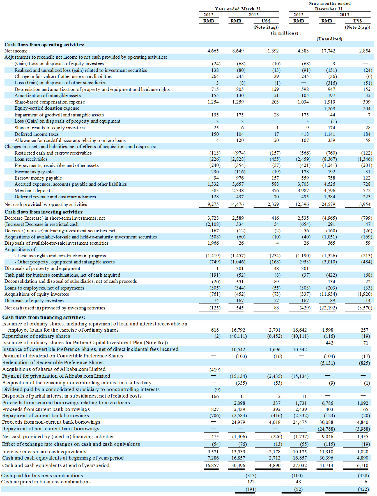

返回主页
ALIBABA GROUP HOLDING LIMITED CONSOLIDATED STATEMENTS OF CASH FLOWS

Supplemental disclosures of cash flow information:
Payment of income taxes
Enterprise income tax paid was RMB461 million, RMB1,469 million and RMB636 million (unaudited) for the years ended March 31, 2012 and 2013 and the nine months ended December 31, 2013, respectively.
Payment of interest
Interest paid was RMB16 million, RMB912 million and RMB807 million (unaudited) for the years ended March 31, 2012 and 2013 and the nine months ended December 31, 2013, respectively.
Major non-cash transactions:
During the year ended March 31, 2012, certain share options were exercised and certain restricted shares were subscribed where the related exercise price or the related subscription price was satisfied by full recourse loans provided by the Company. The amounts of such loans made during the year ended March 31, 2012 totaled RMB716 million. Further details of this non-cash transaction are disclosed in Note 13.
During the year ended March 31, 2013, the Company completed the Initial Repurchase for a total consideration of RMB44.9 billion (US$7.1 billion), of which RMB5.1 billion (US$800 million) was settled by the issuance of the Redeemable Preference Shares to Yahoo (Note 4(a)).
During the year ended March 31, 2013 and the nine months ended December 31, 2013, the Company entered into certain non-compete agreements with certain key individuals in exchange for 400,000 and 6,700,000 ordinary shares of the Company, respectively.
version:1.0; jobnet@188.com © retter2012.com